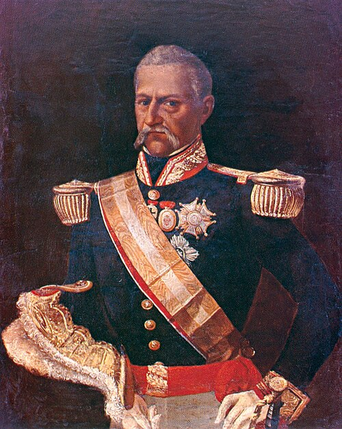

historias que conmueven

Pedro José de Zavala y Bravo del Ribero fue un influyente aristócrata y militar limeño, reconocido como el VI marqués de San Lorenzo del Valleumbroso, cuya vida transcurrió en medio de las guerras de independencia. Como fiel defensor de la corona española, utilizó su fortuna personal para financiar tropas realistas, destacando la creación del Escuadrón del Rey para intentar frenar el avance independentista en el Perú. Su papel político fue decisivo en 1821, cuando participó activamente en el motín de Aznapuquio, el golpe de Estado que destituyó al virrey Pezuela para colocar en su lugar a José de la Serna, siendo el propio Zavala quien comunicó la noticia al virrey depuesto.
Pedro José de Zavala y Bravo del Ribero fue un influyente aristócrata y militar limeño, reconocido como el VI marqués de San Lorenzo del Valleumbroso, cuya vida transcurrió en medio de las guerras de independencia. Como fiel defensor de la corona española, utilizó su fortuna personal para financiar tropas realistas, destacando la creación del Escuadrón del Rey para intentar frenar el avance independentista en el Perú. Su papel político fue decisivo en 1821, cuando participó activamente en el motín de Aznapuquio, el golpe de Estado que destituyó al virrey Pezuela para colocar en su lugar a José de la Serna, siendo el propio Zavala quien comunicó la noticia al virrey depuesto.